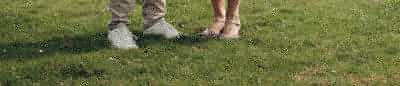

Datastrategie & architectuur
Ik help organisaties bepalen waar ze met data naartoe willen en wat daarvoor nodig is. Samen brengen we prioriteiten, eigenaarschap en architectuur terug tot een duidelijke en haalbare koers.
Datastrategie · Procesverbetering · Dataplatformen
Harrewijn Data helpt om slimmer met data te werken. Duidelijke besluiten, efficiëntere processen en oplossingen die de organisatie zelf kan beheren.

Ervaring bij organisaties waaronder


Diensten
Ik help organisaties bepalen waar ze met data naartoe willen en wat daarvoor nodig is. Samen brengen we prioriteiten, eigenaarschap en architectuur terug tot een duidelijke en haalbare koers.
Betrouwbare data begint met duidelijke afspraken. Ik help eigenaarschap, definities en controles zo in te richten dat mensen weten welke data ze kunnen vertrouwen en wie waarvoor verantwoordelijk is.
Veel processen kosten onnodig veel handwerk of bestaan uit losse bestanden en controles. Ik breng het proces in kaart en kijk waar data, automatisering of AI het werk eenvoudiger, sneller en betrouwbaarder kan maken.
Als er een nieuw of beter dataplatform nodig is, kan ik de gekozen aanpak ook daadwerkelijk realiseren. Daarbij staat niet de techniek centraal, maar een oplossing die betrouwbaar werkt en door de organisatie zelf beheerd kan worden.
Geselecteerde ervaring
Ik help organisaties niet alleen een richting te kiezen, maar die ook werkend te krijgen — van stakeholderafstemming en procesverbetering tot governance en implementatie.
Bij Vecozo verkortte een AI-oplossing de doorlooptijd van een arbeidsintensief proces met 90%.
Requirements van zeven gemeenten en de Provincie Overijssel zijn geharmoniseerd tot één gedeeld functioneel ontwerp en één technische richting.
Meer dan tien bronsystemen samengebracht in één beheerde dataomgeving voor consistente managementinformatie.
Een Microsoft Fabric-platform ontworpen en gebouwd dat circa 4 TB aan zorgdata verwerkt.
Een Microsoft Fabric-dataplatform ontworpen en geïmplementeerd met dimensionele modellering, row-level security, geautomatiseerde datakwaliteitscontroles, scorecardrapportages en gebruikersadoptie.
Het redesign van een centraal dataplatform geleid en platformkeuzes verbonden aan publieke standaarden, governance-eisen en een toekomstgerichte architectuur.
Een end-to-end datawarehouse- en Power BI-oplossing gerealiseerd met herbruikbare datastromen, governance en operationele monitoring.
Mijn werkwijze
Breng de businessvraag, het huidige proces, stakeholders, knelpunten en randvoorwaarden in kaart voordat een oplossing wordt gekozen.
Vertaal verschillende belangen en requirements naar één gedeelde richting, duidelijke prioriteiten en werkbare ontwerpprincipes.
Herontwerp proces en data-oplossing in korte iteraties, met zichtbare resultaten en meetbare voortgang.
Draag kennis over, leg eigenaarschap vast en ondersteun adoptie zodat de nieuwe werkwijze ook na het project blijft werken.

Consultant & Business Analist
Senior Data Architect en Business Analist, gericht op betere besluitvorming, processen en praktische verandering.
Mijn werk begint meestal bij mensen en processen, niet bij technologie. Ik breng verschillende belangen bij elkaar, maak complexe vraagstukken concreet en help organisaties om tot een werkbare aanpak te komen. Doordat ik ook de technische realisatie begrijp, blijft mijn advies praktisch en uitvoerbaar.
Ervaring met businessanalyse, procesverbetering, stakeholdermanagement, datastrategie, governance, Microsoft Fabric en Power BI.
Technische expertise
Een datavraagstuk?
Of het nu gaat om inefficiënte processen, onduidelijk eigenaarschap, versnipperde rapportages of een platform dat niet meer bij de organisatie past: ik help het vraagstuk te structureren, betrokkenen te verbinden en dit te vertalen naar een concrete volgende stap.
Start een gesprek